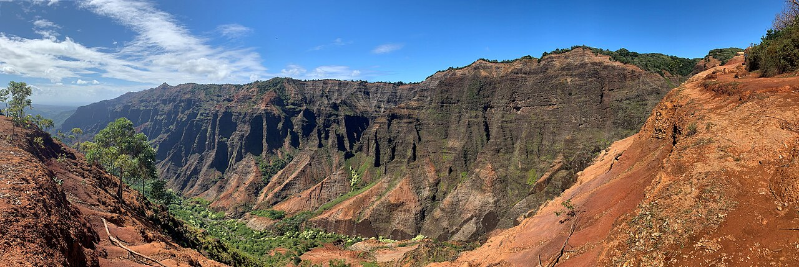

Explore Kauaʻi
Kauaʻi has green valleys, dramatic cliffs, and coastal communities. These three places introduce different landscapes across the island.
Places to Explore
- Waimea Canyon
- Nāpali Coast
- Poʻipū
Waimea Canyon

Waimea Canyon is a large canyon on western Kauaʻi. Its colorful rock layers, ridges, and deep valleys create a landscape different from the island’s beaches. It shows how erosion shapes the land over time.
Nāpali Coast
The Nāpali Coast lies along the northwestern shoreline of Kauaʻi. Steep cliffs and valleys rise above the ocean. This coastline highlights the dramatic meeting of mountains and sea.
Poʻipū
Poʻipū is a coastal community on southern Kauaʻi, known for its beaches and ocean scenery. Its shoreline offers a contrast to Waimea Canyon and the steep cliffs of the Nāpali Coast.